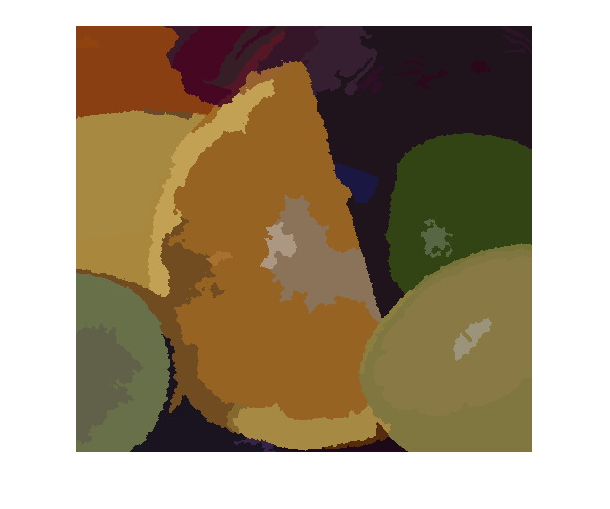
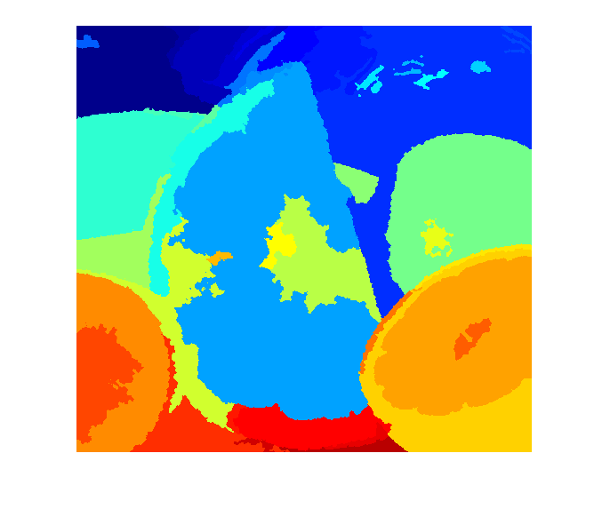

Image Segmentation using Hierachical Feature Selection (HFS)
The algorithm is executed in 3 stages. In the first stage, it obtains an over-segmented image using SLIC. In the last 2 stages, it iteratively merges the over-segmented image with merging method mentioned in EGB (Efficient Graph-based Image Segmentation) and learned SVM parameters.
Sources:
read an image
img = imread(fullfile(mexopencv.root(),'test','fruits.jpg'));
initialize object with image height and width
obj = cv.HfsSegment(size(img,1), size(img,2));
obj.SlicSpixelSize = 8; % change any parameter you wantperform segmentation
out = obj.performSegment(img, 'Draw',true);
imshow(out)instead of getting a segmented image, we can also get a matrix of indices
L = obj.performSegment(img, 'Draw',false);
figure, imshow(label2rgb(L))